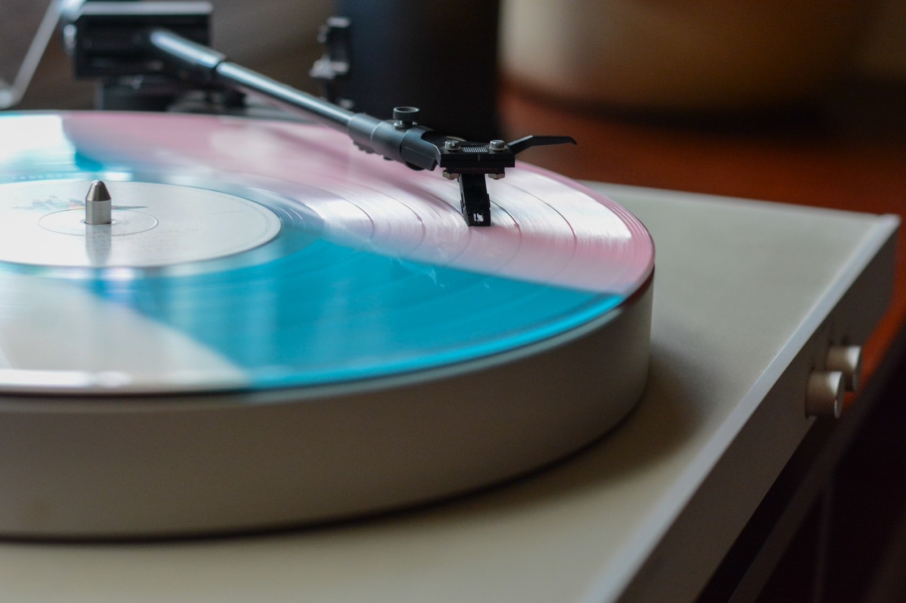

W dziale książek znajdziesz zarówno bestsellery autorów znanych na całym świecie, jak i pozycje mniej znane, lecz doceniane przez wyjątkowe i nieprzeciętne grona czytelników. Dla ułatwienia odnalezienia przez Ciebie - drogi czytelniku - odpowiedniego dzieła, podzieliliśmy nasze zbiory na działy: podróżnicze, psychologiczne, o gotowaniu, zdrowiu, dla dzieci oraz fantastykę. Kto wie, może w każdym z tych działów znajdziesz coś dla siebie?
Muzyka

Muzyka łagodzi obyczaje. Wpływa pozytywnie na psychikę. W kategoriach estetycznych jest jednym z przejawów ludzkiej kultury. Muzyka towarzyszy różnym okolicznościom. Początkowo była kojarzona przede wszystkim z rytuałami i ceremoniami religijnymi. Następnie zaczęła stanowić również element zabawy. Muzyka jest bardzo często kojarzona z tańcem. Dodatkowo można ją klasyfikować pod względem wielu gatunków. Jednym z podziałów jest klasyfikacja według formy przekazu. W tym kontekście wyróżniamy muzykę rozrywkową, ludową oraz profesjonalną. Inny podział dotyka kwestii genetycznych (wyróżnimy tutaj między innymi muzykę poważną).
Filmy
Naszą wspólną wędrówkę po świecie filmu musimy rozpocząć od wyjaśnienia tego, czym jest film w sensie technicznym. Mówiąc najprościej i najogólniej – film to seria ruchomych obrazów, a raczej seria obrazów nieruchomych, które nam widzom wydają się ruchome (postać na ekranie biegnie, koń galopuje, jedzie samochód, a wezbrane fale morza uderzają o brzeg). Co trzeba zrobić, aby to, co faktycznie nieruchome, zdawało się płynnie poruszać?
Gry
W dzisiejszym świecie pod wpływem szybkiego rozwoju technologii gry komputerowe i sieciowe stały się źródłem wielu rozrywek i nie tylko. Istnieje wiele prób określenia: czym jest gra komputerowa i jednakie posiada cechy wspólne? Najogólniej „gra komputerowa” jest programem służący do celów rozrywkowych, ale może spełnia również cele edukacyjne, gdy wymaga aktywnego współuczestnictwa osoby w danej formie rozgrywki i kształtuje wiedzę, umiejętności i postawy. Gry komputerowe charakteryzują się bogatą różnorodnością grafiki, fabuły czy sterowania.
Artykuły papiernicze
Istnieją rzeczy, bez których trudno wyobrazić sobie sprawną pracę biura. I wcale nie chodzi tu o wszechobecne komputery, tablety i drukarki. Do biurowego niezbędnika zalicza się również przybory do pisania. Mimo że wszyscy korzystamy z nowoczesnych laptopów, długopisy, cienkopisy i zakreślacze nadal są niezastąpione. Jak wybrać odpowiednie artykuły biurowe dla firmy? Sklepy i hurtownie oferują bardzo szeroki asortyment tego typu produktów. Wobec ogromnego wyboru materiałów biurowych i papierniczych łatwo jest się pogubić. Chyba każdy, kto wyposażał biuro, pamięta sytuacje, kiedy kupione materiały okazywały się nieprzydatne, za to czasem brakowało ważnych rzeczy.